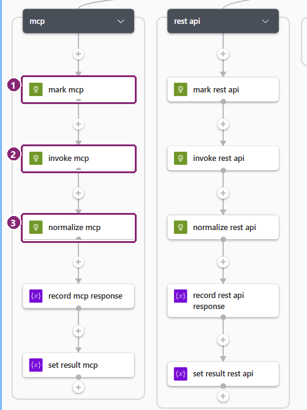

Data berpindah lewat output node
- Request / ComposeBody,
question,run_idTeruskan input - Conversation / routerID percakapan dan JSON routeBaca keputusan
- Switch / specialistCase
mcpmemanggil FoundryKirim respons native - Normalize / Set resultPeriksa fakta dan simpan
ResultBalas klien - ResponseStatus HTTP, fakta, sumber
Execute selesai, Response membaca variabel yang diisi cabang, bukan output Scope sebagai jawaban.Buka parameter yang ingin kamu periksa
1. Request, Validate request, capture question
kpp_mining_start menerima POST dengan question dan run_id opsional. Validate_request membaca Body, bukan URL, dan Reject_invalid_request mengembalikan 400 jika parsing gagal. capture_question (Compose) membentuk satu objek berisi pertanyaan dan ID korelasi yang dibaca action lain.
2. Initialize result, Execute, create conversation
Initialize_result menyiapkan NativeResponses untuk catatan respons dan Result untuk hasil akhir saat runtime; keduanya bukan isian manual di portal. Execute adalah Scope, yaitu wadah beberapa action. create_conversation mengirim POST ke /openai/v1/conversations dengan managed identity. ID dari respons dipakai oleh router dan specialist.
3. Classify question, Parse router, dan Switch
classify_question memanggil /openai/v1/responses. Body berisi pertanyaan, ID percakapan, dan agent_reference berisi nama serta versi router. record_router_response mencatat respons. Parse_router memeriksa status selesai, mengambil teks dari output pesan, dan mengurai keputusan JSON; hasil yang tidak valid tidak diteruskan ke specialist.
@body('router_decision')?['route']Ini ekspresi On pada route_question. Untuk pertanyaan TRK001, nilai yang diharapkan mcp dan Switch hanya menjalankan case tersebut.
4. Mark mcp, invoke mcp, normalize mcp
mark_mcp menulis penanda KPP_ROUTE:mcp ke konteks percakapan. invoke_mcp mengirim pertanyaan asli, ID percakapan, dan agent reference kppdemo-mcp:1 ke Foundry. Agent ini memanggil get_work_orders; WDL tidak memanggil tool langsung.
normalize_mcp menerima run_id, route, dan respons native untuk memeriksa fakta serta sumber. Setelah respons dicatat, set_result_mcp mengisi Result. Audience ke API normalizer berbeda dari audience ke Foundry; lihat pengaturan izin.
5. Response di luar scope Execute
kpp_mining_end membaca @variables('Result'). WDL mengembalikan HTTP 502 jika Result.status adalah failed; selain itu Response utama memakai 200. Validasi request punya jalur 400 terpisah. Untuk MCP01, cek mcp / success, fakta WO001, dan sumbernya.
Tidak semua route harus mengembalikan data
- Pencarian data
mcp,rest_api,knowledge,foundry_iq, danfabric_data. Masing-masing memakai specialist dan koneksi demo yang sesuai. Nama route bukan bukti jenis koneksi yang dipakai; lihat evidence tool.- Kapabilitas belum tersedia
fabric_iqdanwork_iqtetap menghasilkanblockeddalam snapshot demo, bukan hasil retrieval yang dianggap sukses.- Input atau cakupan
clarificationmeminta rincian yang kurang,unsupportedmenangani permintaan di luar demo, dandefaultmenangani route yang tidak jatuh ke case terdaftar. Baca hasil bisnis padaResult.status.
Praktik: temukan tiga node dalam case MCP
Buka Development Tools → Logic app designer pada workflow sandbox yang disiapkan. Di bawah Switch, pilih case mcp. Lihat kanvas terlebih dahulu, baru panel Parameters pada masing-masing node.


- Cek mark mcp: penanda harus menunjukkan cabang yang kita pilih.
- Cek invoke mcp: cocokkan nama agent, versi, dan ID percakapan.
- Cek normalize mcp: Body mengacu ke respons
invoke_mcp. Di Run history, periksa fakta dan sumber dari run yang sama.
Screenshot fokus pada posisi node. Untuk panel Parameters dan Run history, buka rekaman Designer (2:13) atau timestamp tiap action. Tampilan portal bisa berubah.